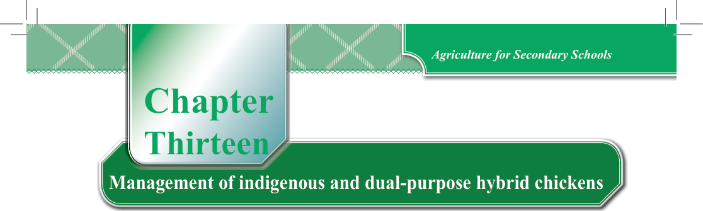

Chapter
Thirteen
Management of indigenous and dual-purpose hybrid chickens
Think
“Thriving under poor conditions yet providing you with meat and eggs”
Management of indigenous chickens
Indigenous chickens produce both eggs and meat. These chickens do well in their natural environment because they can adapt easily. They need basic care such as proper housing and feeding. It is important to check on them regularly to manage breeding or mating as well as parasites and diseases. Indigenous chicken farming helps the local economy by creating opportunities for farmers and the community to earn money.
Housing for indigenous chickens
Indigenous chickens need a good house to live in, just like other chickens. The house should be in a good location, have the right size, and be made of the right materials. It is important to make a good plan or design for the house.
Activity 13.1
(a) Think of a good design for a house to keep indigenous chickens of your choice:
(i) Brainstorm and discuss ideas with your group about how the chicken house should look and function.
(ii) Consider factors such as space, ventilation, and protection from predators.